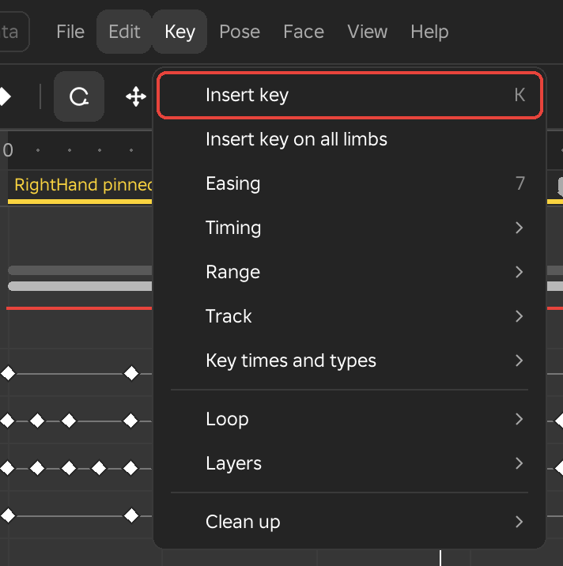
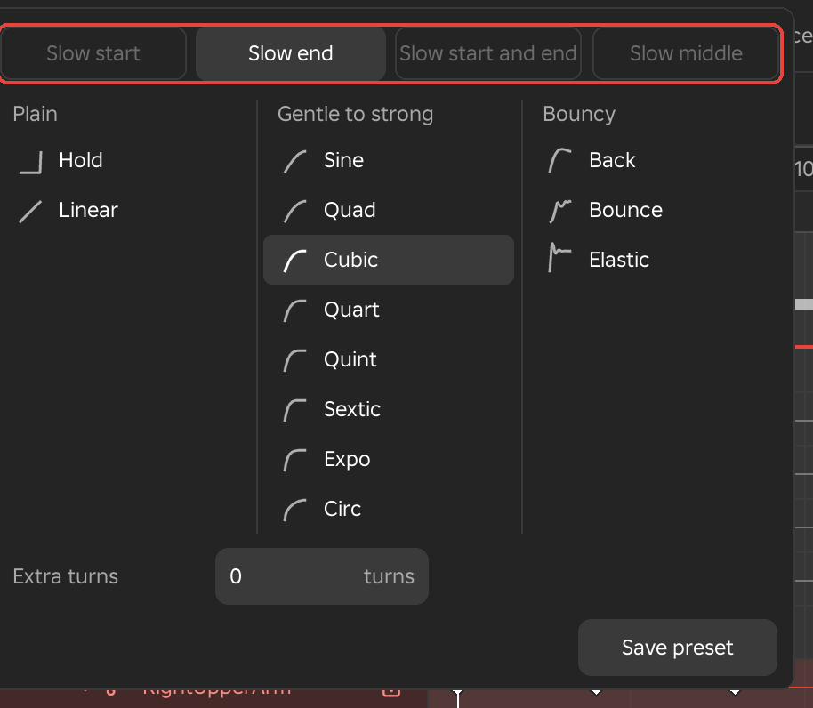
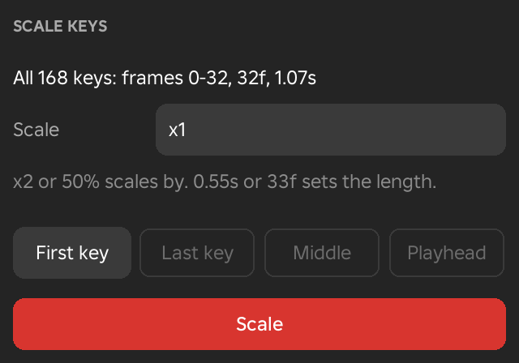

Key Menu
The Key menu holds everything that works on keys: setting them, changing how the motion travels between them, moving them in time, and cleaning up a finished clip. It shows in the Animate workspace.

Insert Key
- Menu
- Key ‣ Insert key
- Key ‣ Insert key on all limbs
- Right-click
- A limb in the viewport or the track list
- Shortcut
- K
A key stores the pose of a limb at one frame. Insert key keys the selected limb at the playhead exactly as it stands, and Insert key on all limbs keys every limb of the rig at once. Between two keys Framez moves the limb from one pose to the other, so an animation is a series of keyed poses with the motion filled in between.
You rarely need to key by hand while posing, because moving a limb with the handles keys it for you when Auto key is on. Insert key is for the times you want a key without changing the pose, such as holding a pose for a few frames.
In the Scene workspace the same shortcut keys the selected camera, prop or light.
Examples
To hold a pose before a jump, key the crouch, move the playhead six frames later and insert a key on all limbs. The rig now stays still for those six frames before it moves on. To start a new animation, pose the first frame and insert a key on all limbs so every limb has a starting point.
Easing
- Menu
- Key ‣ Easing
- Right-click
- A key on the timeline
- Shortcut
- 7
Easing sets how a limb speeds up and slows down on its way from one key to the next. It belongs to the key that starts the move, so to change how a swing lands you select the key where the swing begins. You can select one key or many and give them all the same easing in one step.
The Easing menu opens at the mouse. The four buttons along the top choose where the move slows down, and the three columns below choose how strongly. Pointing at a style previews it on the rig and on the timeline, and moving away puts the keys back the way they were. Clicking applies it as one undo step.
Options
- Slow start, Slow end, Slow start and end, Slow middle
- Where the move slows. Slow start leaves the first pose gently, Slow end arrives gently, and Slow start and end does both. Slow middle is fast at both ends and slow in between. The menu remembers your last choice.
- Plain
- Hold keeps the pose until the next key and then jumps to it. Linear moves at one steady speed.
- Gentle to strong
- Sine, Quad, Cubic, Quart, Quint, Sextic, Expo and Circ, from the softest curve to the sharpest.
- Bouncy
- Back passes the next pose and comes back to it, Bounce bounces into it, and Elastic springs around it. Choosing Elastic opens its two amounts so you can tune the spring.
- Extra turns
- Adds whole spins to the selected moves, from -4 to 4. Use it when a limb or the body has to turn more than half a turn between two keys; a negative number spins the other way.
- My easings
- The easings you have saved appear as buttons under the styles. Right-click one to use it for every new key, or to delete it.
- Save preset
- Saves the first selected move's easing under a name you type, including where it slows and Elastic's amounts.
Examples
A sword hit that should land hard and then settle uses Slow end with Expo on the key before the impact. A spin of two full turns between two keys needs Extra turns set to 2, because without it the body takes the shortest way round.

See Also
Easing in the Inspector sets the same choice for one key.
Timing
The Timing tools move keys earlier or later and change how long a stretch of the animation lasts.
Scale Keys
- Menu
- Key ‣ Timing ‣ Scale keys...
- Right-click
- A key on the timeline
Scale keys makes the selected keys faster or slower by spreading them apart or pulling them together. With fewer than two keys selected it scales the whole animation, and then events, weapon switches and face keys move along with the keys. If the animation gets longer, the timeline grows to fit.
The dialog first says which keys it will move and the frames they cover. You type how much to scale, choose the frame that stays where it is, and click Scale or press Enter.
Options
- Scale
- Either a factor or a new length.
x2or200%doubles the time and50%halves it, while0.55sor33fmakes the selection exactly that long. - First key, Last key, Middle, Playhead
- The frame that stays fixed while everything else moves around it. First key keeps the start in place and moves the end, Last key does the opposite, Middle grows or shrinks from the centre, and Playhead scales around the current frame.
Example
For example, if a skill's cast time in your game is 0.8 seconds, select all of its keys, type 0.8s and keep the First key fixed. The animation now starts on the same frame and ends exactly when the cast does.
Notes
A scale that would push a key before frame 0 changes nothing, and the message says so. Choose another fixed frame or scale by less.

Move Keys
- Menu
- Key ‣ Timing ‣ Move keys...
- Shortcut
- Shift+Left and Shift+Right move the selected keys by one frame
Move keys shifts the selected keys earlier or later by a number of frames that you type. Every selected key moves by the same amount, so the spacing between them stays as it is. The row is greyed until at least one key is selected.
Type the number of frames in the dialog and click Move. A negative number moves the keys earlier.
Options
- By
- The number of frames to move the selected keys. A positive number moves them later and a negative number earlier.
Example
For example, to slide a whole wind-up six frames later, select its keys on every limb, choose Move keys and type 6. To bring one hit a frame sooner, select the keys on the impact and type -1.
Notes
Nothing moves, and the message gives the reason, when the first selected key is on frame 0 and you move earlier, when the last selected key is on the last frame and you move later, or when a key of the same limb that is not selected already sits on a frame a key would land on. Keys on a locked limb never move.
See Also
Move 1 Frame Earlier and Move 1 Frame Later are the same move for one frame, on the keys or on a whole track.
Ripple Edits
- Menu
- Key ‣ Timing ‣ Ripple edits
- Shortcut
- Hold Shift while dragging to switch it for one drag
When Ripple edits is on, changing the timing of some keys also moves everything after them. Dragging keys later, or stretching the selection box's right edge, pushes every later key on every limb by the same amount, together with the events, weapon switches and face keys after them, and the animation's length follows. When it is off, only the keys you drag move.
Example
For example, in a three-hit combo you can slow down the second hit and the third hit moves later with it, so the gap between them stays the same.
Retime Tool
- Menu
- Key ‣ Timing ‣ Retime tool
- Right-click
- A stretch on the retime strip, for Retime easing
The Retime tool speeds up or slows down stretches of an animation by dragging markers, so you do not have to type a factor. Choosing it switches the tool on and shows a strip under the timeline ruler. Choosing it again hides the strip.
Markers divide the animation into stretches. Click the strip to drop a marker on that frame, then drag the marker along the strip. The keys between the marker and its neighbours spread out on one side and squeeze together on the other, in proportion, and events, weapon switches and face keys move with them. A marker cannot be dragged past the markers on either side of it. Each stretch shows its speed as a percentage of its original speed, so 50 % plays at half speed and 200 % at double speed. A stretch that now plays faster is tinted red and one that plays slower is tinted blue.
Right-click a marker to delete it. Right-click while dragging cancels the drag. Right-click a stretch to ease it, which is the same as Retime Easing.
Notes
With keys selected, only the limbs of the selected keys are retimed, and events, weapon switches and face keys stay where they are. With no keys selected, every unlocked limb is retimed. A drag is refused, and the message says why, when it would put two keys of one limb on the same frame. The markers are saved beside the animation, so they are there when you open it again, and they are not part of the clip your game plays.
Example
For example, to make the hit of a slash land five frames sooner, drop a marker on the hit and drag it five frames earlier. The wind-up before it speeds up and the recovery after it slows down to fill the gap, and the animation keeps its length.
Retime Easing
- Menu
- Key ‣ Timing ‣ Retime easing ‣ Ease in
- Key ‣ Timing ‣ Retime easing ‣ Ease out
- Key ‣ Timing ‣ Retime easing ‣ Ease in and out
- Right-click
- A stretch on the retime strip
Retime easing changes how the keys inside one retimed stretch are spaced, so the stretch gathers speed or slows down gradually instead of playing at one rate. It works on the stretch between two retime markers that contains the playhead. Every limb is eased, and events, weapon switches and face keys follow the keys. The stretch must be at least two frames long, and at least one marker has to exist, otherwise the message asks you to add one first.
Options
- Ease in
- The stretch starts slowly and speeds up toward its end.
- Ease out
- The stretch starts quickly and slows down toward its end.
- Ease in and out
- The stretch is slow at both ends and quicker in the middle.
Example
For example, to make a lunge between two markers gather speed as it travels, put the playhead inside that stretch and choose Ease in.
See Also
Retime Tool places the markers.
Insert Frame
- Menu
- Key ‣ Timing ‣ Insert frame
Insert frame adds one frame at the playhead. Every key after the playhead moves one frame later and the animation becomes one frame longer. Events, weapon switches, face keys and show or hide switches after the playhead move with the keys. Keys on the playhead's own frame stay where they are, and keys on a locked limb are left in place.
It makes a hold longer, or opens a gap for a pose, without dragging every track by hand.
Example
For example, if a pose is held one frame too short before the next move starts, put the playhead on the held pose and choose Insert frame. The hold gets one frame longer and the rest of the animation follows it.
Remove Frame
- Menu
- Key ‣ Timing ‣ Remove frame
Remove frame takes one frame out after the playhead. Every key after the playhead moves one frame earlier and the animation becomes one frame shorter. Events, weapon switches, face keys and show or hide switches move with the keys, and keys on a locked limb are left in place.
It refuses, and names the limb, when a limb has keys on both the playhead's frame and the frame after it, because one of those keys would have to go. Delete one of them first. An animation that is one frame long cannot be shortened.
Example
For example, if a hold lasts a frame too long, put the playhead on the first frame of the hold and choose Remove frame.
Offset Limbs
- Menu
- Key ‣ Timing ‣ Offset limbs
Offset limbs staggers the selected keys of several limbs so that each limb moves a few frames after the one before it. Parts that follow what carries them, such as an arm trailing the torso, look natural when they overlap like this instead of starting on the same frame. The row is greyed until keys on two limbs are selected.
The tool runs as soon as you choose it, using the values from its last run, and its values open in Adjust at the foot of the Framez window. Changing a value takes the last run back and runs it again with the new value. The result is listed in the Modifiers window, where you can change it, turn it off or delete it later.
Options
- Frames between
- How many frames later each limb's keys start than the limb before it, from -30 to 30. A negative number staggers the other way. The default is 2.
- Order
- Which limb goes first. The rig's order starts with the root and works outward, Reversed starts at the far end, and As listed follows the order of the Limbs list.
- Limbs
- The limbs to offset. They start as the limbs of the selected keys.
- Frames
- The first and last frame the offset applies to. They start as the range of the selected keys.
- Presets
- Overlap down the arm uses 2 frames in the rig's order, and Drag behind uses 3 frames in reverse order. Presets you save yourself appear in the same list.
Example
For example, a sword swing keyed with the torso, shoulder, elbow and hand all moving together looks stiff. Select the swing's keys on those limbs and choose Offset limbs with 2 frames between, so the arm follows the torso and the hand follows the arm.
Snap Keys to Video Hits
- Menu
- Key ‣ Timing ‣ Snap keys to video hits
- Needs
- The Framez Helper, and a reference video linked to the timeline
Snap keys to video hits moves each selected key onto the nearest beat of the linked reference video. A beat is a moment where the picture stands still or a hit in the sound, the same moments the beats strip marks. A key moves only when a beat is within 8 frames of it. When another key of the same limb already sits on that frame, the key goes to the nearest free frame, so keys never overwrite each other. The row is greyed until keys are selected.
If no video is linked, or Framez has not finished reading it, the message says so and nothing moves.
Example
For example, when you animate a dance against a video, select the keys of a pose and snap them to the nearest beat instead of dragging each key to the beat by eye.
Stretch by Dragging
- Shortcut
- Hold Alt while dragging to stretch around the middle of the selection
When the selected keys cover two frames or more, a box appears around them on the timeline with a handle at each end, and a label over the box shows its length in frames. Drag the right handle to stretch or squeeze the keys toward the left end of the box, or drag the left handle to do the same toward the right end. With Alt held, both ends move around the middle of the box.
Keys land on whole frames and never on top of each other, so the drag stops at the shortest length that keeps every key on its own frame. Only the selected keys move. Events, weapon switches and face keys inside the stretch move with them when every limb that has keys in that stretch is selected. Right-click while dragging cancels the drag, and a finished drag is one undo step.
When Ripple Edits is on, dragging the right handle also pushes everything after the box.
Example
For example, a swing that feels a little slow can be tightened by selecting its keys and dragging the right handle a few frames to the left, without typing a factor.
See Also
Scale Keys does the same with a number you type.
Range
The Range tools work on a stretch of the animation. The stretch is the frames covered by the selected keys, or the whole animation when no keys are selected. Repeat, Delete range, Crop to range and Bake keys run as soon as you choose them, using the values from their last run, and their values open in Adjust at the foot of the Framez window. Changing a value there takes the last run back and runs it again with the new value, so you can try values and watch the result.
Reverse
- Menu
- Key ‣ Range ‣ Reverse
- Right-click
- A key on the timeline ‣ Range ‣ Reverse
Reverse plays the selected keys backwards inside their own stretch. The stretch keeps its first and last frame, and every pose lands on the mirrored frame, so the motion now runs from the end to the start. Easing is reversed as well, so a move that eased in now eases out, and a held pose is still held for the same number of frames. With no keys selected, the whole animation is reversed.
Events, weapon switches and face keys inside the stretch reverse with it when every limb that has keys there takes part.
Notes
Select keys on at least two frames, or select none to reverse the whole animation. Keys whose curve was shaped in the Curve editor, and keys with extra turns, are replaced by a key on every frame of the stretch first, so that they reverse exactly.
Example
For example, a sheathe animation is often a draw animation played backwards. Select nothing, choose Reverse on a copy of the draw, and the weapon now goes away instead of coming out.
Repeat
- Menu
- Key ‣ Range ‣ Repeat
- Right-click
- A key on the timeline ‣ Range ‣ Repeat
Repeat adds copies of the selected keys after them. Each copy starts on the last frame of the one before it, so a stretch that was built to loop repeats without a seam. Events and weapon switches inside the stretch are copied into every copy. It needs selected keys on two frames or more; with none selected, the whole animation is repeated.
Options
- Times
- How many more copies to add, from 1 to 50. The default is 2.
- Insert, Over keys after
- Insert moves the keys that come after the stretch later to make room for the copies, and the animation grows by the same amount. Over keys after leaves them in place and lets the copies replace whatever is in the way. Insert is the default.
Example
For example, a breathing idle that was keyed once can be repeated until the animation is as long as the idle plays in your game.
See Also
Fill to Playhead repeats up to a frame instead of a number of times, and Ping-Pong plays the copy backwards.
Fill to Playhead
- Menu
- Key ‣ Range ‣ Fill to playhead
- Right-click
- A key on the timeline ‣ Range ‣ Fill to playhead
Fill to playhead repeats the selected keys again and again after themselves until it reaches the playhead. The last copy is cut at the playhead with a key that holds the pose the motion has there, so the animation ends in the middle of a repeat when the frames do not divide evenly. The copies replace whatever is in the way, and keys after the playhead stay where they are. The playhead has to be after the selected keys.
Example
For example, key one step of a stomping loop, move the playhead to frame 120 and choose Fill to playhead. The step repeats until that frame.
Ping-Pong
- Menu
- Key ‣ Range ‣ Ping-pong
- Right-click
- A key on the timeline ‣ Range ‣ Ping-pong
Ping-pong adds a copy of the selected keys played backwards right after them. The motion goes through the stretch and then comes back to where it began. Keys after the stretch move later to make room, and the animation grows by the length of the stretch. It has no values to set. With no keys selected it works on the whole animation.
Example
For example, a swinging lantern or a breathing chest can be keyed as one half of the motion and finished with Ping-pong.
Delete Range
- Menu
- Key ‣ Range ‣ Delete range
- Right-click
- A key on the timeline ‣ Range ‣ Delete range
Delete range removes every key between two frames and keeps the motion on either side. A key is added on each edge of the range, holding the pose the animation had there, so the limbs move from the first edge to the second where the deleted keys used to be. The animation keeps its length. When every limb is cleared, events inside the range are removed as well.
The range starts as the frames of the selected keys. With no keys selected it uses the play range if one is set, and otherwise it runs from the playhead to the end of the animation.
Options
- From frame, To frame
- The first and last frame of the range. Keys on the frames between them are deleted, and the two edge frames receive keys.
- Every limb, the limb's name
- Which limbs lose their keys. Choosing the selected limb's name leaves every other limb, and the events, as they are.
Example
For example, if a limb wobbles between two good poses because of extra keys, delete the range between them and the limb moves from one pose to the other directly.
See Also
Crop to Range keeps a range and removes everything outside it.
Crop to Range
- Menu
- Key ‣ Range ‣ Crop to range
- Right-click
- A key on the timeline ‣ Range ‣ Crop to range
Crop to range keeps only the frames between two frames and cuts the rest of the animation away. A key is added on each edge, so the first and last pose of the kept part are exactly what the animation showed there. Every unlocked limb is cropped, and events, weapon switches and face keys outside the range are removed. Any play range is cleared.
The range starts as the frames of the selected keys. With no keys selected it uses the play range if one is set, and otherwise it runs from the playhead to the end of the animation.
Options
- From frame, To frame
- The first and last frame to keep. The range has to be at least two frames long.
- Start at frame 0, Keep the frames
- Start at frame 0 moves the kept part to the start of the animation, so the animation is as long as the range. Keep the frames leaves the kept part on its own frames, and the animation then ends on the To frame.
Example
For example, a recorded take holds its action between frame 40 and frame 130. Set those frames and choose Start at frame 0, and the animation becomes those 90 frames of action.
Bake Keys
- Menu
- Key ‣ Range ‣ Bake keys
- Right-click
- A key on the timeline ‣ Range ‣ Bake keys
Bake keys replaces the keys in a stretch with a new key every few frames, read from the motion as it plays. It works on the stretch and the limbs of the selected keys, or on every limb over the whole animation when no keys are selected. The new keys are Generated keys, the small grey keys that Framez makes from motion instead of from poses you set.
Options
- Every
- The number of frames between the new keys, from 1 to 8. The default is 2.
- Hold each pose, Smooth between
- Hold each pose holds every pose until the next key, so the animation steps, in your game as well. Smooth between joins the keys with moves, so the limb keeps moving between them.
Example
For example, to give an animation a stop-motion look, bake every 3 frames with Hold each pose. Each pose is held for three frames.
Reshape Keys
- Menu
- Key ‣ Range ‣ Reshape keys
Reshape keys exaggerates, calms, shifts or retimes the motion of many keys at once, using curves that change over the frames. Framez reads the motion over the frames you choose, applies the curves, writes a key on every frame and then thins the result to the keys the motion needs. Limbs without keys are skipped, and the frames must cover at least three frames.
The tool runs as soon as you choose it, with the values from its last run, and its values open in Adjust. The result is listed in the Modifiers window. In each of the three curves, click to add a point, drag a point to move it and right-click a point to remove it.
Options
- Limbs, Frames
- The limbs and the frames to reshape. They start as the limbs and the range of the selected keys.
- Channels
- Rotation X, Rotation Y, Rotation Z, Position X, Position Y and Position Z. Only the ticked channels change. The three rotation channels are ticked at first.
- Amount over time
- A curve over the frames that scales each channel's motion around its own average. The middle line keeps the motion as it is, the top line doubles it and the bottom line flattens it to its average.
- Shift over time
- A curve that adds to the channels or takes away from them. Above the middle line adds, below it takes away, and the top and bottom of the curve reach the Most turn and Most move values.
- Most turn
- The largest shift, in degrees, on rotation channels, from 0 to 180. The default is 20.
- Most move
- The largest shift, in studs, on position channels, from 0 to 10. It shows when a position channel is ticked. The default is 0.5.
- Time warp
- A curve for how far through the frames each frame plays. A steeper line plays faster and a flatter line plays slower. A straight line leaves the timing as it is.
- Presets
- Exaggerate raises the amount to 150 %, Calm down lowers it to 50 %, Double sets it to 200 % and Flatten sets it to 0 %.
Example
For example, to give a sword swing more punch, select the frames of the swing, leave the three rotation channels ticked and choose the Exaggerate preset. Drawing the Amount curve so that it rises toward the end exaggerates only the last part of the swing.
Track
The Track tools work on one limb's track, the row that holds all of its keys. They need a limb to be selected.
Select Track
- Menu
- Key ‣ Track ‣ Select track
- Right-click
- A limb in the viewport or the track list ‣ Track ‣ Select track
- A key on the timeline ‣ Select track
Select track selects every key of the selected limb. Tools that work on selected keys, such as Scale keys, Offset limbs or Easing, then work on the whole track.
Example
For example, select a hand's track and open Easing to give all of the hand's moves the same easing in one step.
Move 1 Frame Earlier
- Menu
- Key ‣ Track ‣ Move 1 frame earlier
- Right-click
- A limb in the viewport or the track list ‣ Track ‣ Move 1 frame earlier
- Shortcut
- Shift+Left
Move 1 frame earlier moves the selected keys one frame earlier. With no keys selected it moves the whole track of the selected limb, keeping the gap between every key.
When the animation is looping, the whole track of the selected limb moves round the loop instead. A key that leaves frame 0 comes back at the end, and frame 0 and the last frame get the same pose again, so the loop stays closed. When the animation does not loop, the move stops at frame 0. Nothing moves if a key is already there, and the message says so. A locked limb does not move.
Example
For example, in a looping idle, move the head's track one frame earlier so the head leads the body by a frame.
Move 1 Frame Later
- Menu
- Key ‣ Track ‣ Move 1 frame later
- Right-click
- A limb in the viewport or the track list ‣ Track ‣ Move 1 frame later
- Shortcut
- Shift+Right
Move 1 frame later is the same move in the other direction. It moves the selected keys one frame later, or the whole track of the selected limb when no keys are selected, or round the loop when the animation is looping. In an animation that does not loop, the move stops at the last frame and nothing moves if a key is already there.
Example
For example, in a looping walk, move the arms' tracks one frame later so the arms trail the legs by a frame.
See Also
Move 1 Frame Earlier describes the move in full, and Move Keys moves keys by any number of frames.
Lock Track
- Menu
- Key ‣ Track ‣ Lock track
- Right-click
- A limb in the viewport or the track list ‣ Track ‣ Lock track
Lock track protects a limb's animation while you work on other limbs. A locked limb cannot be selected or changed. Deleting, moving, stretching, easing and the tools that work on keys leave its keys alone, and Select all skips them. Its keys still play. A locked limb with no keys stays in the pose it had when it was locked.
While the limb is locked, the row reads Unlock track, and choosing it unlocks the limb. The padlock on the limb's row in the track list does the same. Locking and unlocking are one undo step each.
Example
For example, once the legs of a run are finished, lock both leg tracks and work on the arms without risk of moving a leg key by accident.
Key Times and Types
These tools copy the frames that keys sit on from one limb to another, and set what kind each key is.
Share Key Times
- Menu
- Key ‣ Key times and types ‣ Share key times
Share key times makes several limbs key on the same frames without changing any pose. Every limb with selected keys gets a key on every frame where any of them has a key, inside the stretch of the selected keys. A new key holds the pose the limb already has on that frame, so nothing moves on screen, and the new keys are Generated keys. With no keys selected it works on every limb over the whole animation. It needs at least two limbs with keys.
Example
For example, after blocking the torso on frames 0, 12 and 24 and the arms on frames 4, 15 and 26, share key times so every limb has a key on all six frames. You can then adjust any limb on any of them.
Copy Key Times
- Menu
- Key ‣ Key times and types ‣ Copy key times
Copy key times remembers the frames that keys sit on, without their poses. It copies the frames of the selected keys, or every frame where the selected limb has a key when no keys are selected. The copy stays until you copy again. Use Paste Key Times to put the frames on another limb.
Example
For example, copy the key times of a torso that was keyed on every beat of a dance, so the head and arms can be keyed on the same beats.
Paste Key Times
- Menu
- Key ‣ Key times and types ‣ Paste key times
Paste key times keys the selected limb on the frames that Copy key times remembered. A frame where the limb already has a key is left as it is. Each new key holds the pose the limb already has there, so nothing moves, and the new keys are Generated keys. The row is greyed until key times have been copied, and a locked limb is not changed.
Example
For example, paste the key times of the torso onto the head, then pose the head on each of those frames.
Paste Key Times Only
- Menu
- Key ‣ Key times and types ‣ Paste key times only
Paste key times only does what Paste key times does and also removes the limb's other keys inside the copied stretch, from the first copied frame to the last. Afterwards the limb is keyed on exactly the copied frames within that stretch. The row is greyed until key times have been copied.
Example
For example, an arm that was keyed on every frame can be given the rhythm of the torso. Copy the torso's key times and use Paste key times only on the arm, and the arm keeps keys only where the torso has them.
Key Types
- Menu
- Key ‣ Key times and types ‣ Key
- Key ‣ Key times and types ‣ Breakdown
- Key ‣ Key times and types ‣ Generated
- Right-click
- A key on the timeline ‣ Key type
Every key has a type, shown by how it looks on the timeline. A Key, drawn as a white diamond, is a pose you set. A Breakdown, drawn in blue, is a pose between two keys that shapes how the move travels. A Generated key, drawn small and grey, is a key that Framez made from the motion. The type does not change how a key plays. It helps you see which keys are poses you chose, and it decides which keys the stepped preview holds on when it is set to On keys.
Choose a type to set it on every selected key. The row of the current type is marked, and none is marked when the selected keys are of different types. The rows are greyed until keys are selected.
Notes
Keys you set by hand are Keys. The slider's Breakdown makes Breakdowns. Baking keys, sharing or pasting key times, and the Get from Blender import make Generated keys. Types are saved with the animation's Framez data and are not part of the clip your game plays.
See Also
Select by Key Type
- Menu
- Key ‣ Key times and types ‣ Select every key pose
- Key ‣ Key times and types ‣ Select every breakdown
- Key ‣ Key times and types ‣ Select every generated key
These rows select every key of one type. They work on the selected limb, or on every limb when none is selected, and they skip locked limbs. The selection replaces the one you had.
Options
- Select every key pose
- Selects the keys that are plain Keys, the poses you set yourself.
- Select every breakdown
- Selects the Breakdown keys.
- Select every generated key
- Selects the Generated keys.
Example
For example, after baking an animation, select every generated key and delete them to get back to the poses you set.
Loop
The Loop tools make an animation repeat, and make its end meet its start.
Looping
- Menu
- Key ‣ Loop ‣ Looping
- Shortcut
- Tab
Looping switches repeat on or off for the animation. A looping animation plays round and round, in Framez and in your game. The row is ticked while looping is on. The setting belongs to the animation, so save it to keep it.
Switching looping on does not change any key. When the last frame does not match frame 0, the loop jumps at the seam. Make Cyclic closes the loop, and Check animation lists a seam that does not match.
Example
For example, a run, an idle or a spell channel should loop, while a jump or a death should play once.
Make Cyclic
- Menu
- Key ‣ Loop ‣ Make cyclic
Make cyclic changes the animation so that its end meets its start, and turns Looping on. It can copy the first pose onto the last frame, or build the second half of the animation from the first half with left and right swapped. All of it is one undo step.
The tool runs as soon as you choose it, using the values from its last run, and its values open in Adjust. The result is listed in the Modifiers window.
Options
- Loop
- Same pose at start and end keys the last frame with the pose of frame 0. Mirrored halves builds the second half from the first, mirrored from left to right, as a walk or run needs. The second half starts at the middle of the loop length, and keys from that frame on are replaced.
- Loop length
- The length of the loop in frames, from 2 to 4000. It starts as the animation's length. With Mirrored halves, the first half is half of this length.
- Smooth the torso twist
- Available with Mirrored halves. Eases the torso's twist through the middle of the loop.
- Keep the head facing forward
- Keys the neck on every frame that the body above it is keyed, with the head facing straight ahead. It keeps the head's nod up or down from frame 0 and drops any turn or tilt to the side.
- Presets
- Same pose at start and end, and Mirrored halves (a walk).
Example
For example, a breath keyed over 60 frames loops with Same pose at start and end. A walk keyed for one step becomes a complete cycle with Mirrored halves, because the second step is the first with the legs and arms swapped.
Layers
A layer holds keys of its own on top of the animation and is saved with it. A change made on a layer can be compared, muted and removed without touching the animation's own keys, which are called the base. The Layers rows here are the same layers that the Inspector's animation layers manage, as menu rows.
Add Layer
- Menu
- Key ‣ Layers ‣ Add layer
Add layer creates an additive layer. Its poses are added on top of everything under it and follow it wherever it goes, which makes it the right kind of layer for a lean, a breath or a correction over an animation that may still change. The layer is named Layer 1, Layer 2 and so on, and it becomes the active layer, so the keys you set next go into it. The timeline then shows the layer's keys, and the rig shows every layer together. A line above the ruler names the layer you are keying.
Notes
Saving flattens the layers into the animation that your game plays, and keeps the layers beside it, so opening the save brings them back. On an additive layer, pose with the handles. The tools in the Pose menu that write whole poses are greyed while an additive layer is active.
Example
For example, to add a heavier breath to a finished run without touching its keys, add a layer, key the chest and shoulders on it, and mute the layer whenever you want to compare against the original.
See Also
Animation layers in the Inspector.
Add Override Layer
- Menu
- Key ‣ Layers ‣ Add override layer
Add override layer creates a layer that replaces what is under it on the limbs it keys. Limbs it does not key play as they did before. Like any layer, it becomes the active layer when it is created, and its weight decides how strongly it replaces the layers below.
Example
For example, to swap the arm motion of a run for a different carry pose while leaving the legs alone, add an override layer and key only the arms on it.
Active Layer
- Menu
- Key ‣ Layers ‣ Active layer
Active layer chooses which set of keys you are editing. The list starts with Base, the animation's own keys, followed by every layer you added. The keys you set, and every tool that works on keys, then work on the active layer, and the timeline shows only that layer's keys. The result of a tool stays on the layer it was made on, whichever layer you key into later. The row is greyed until a layer exists.
Example
For example, choose Base to fix a pose in the animation itself, then choose the layer again to carry on with the change you were making on it.
Selected Layer
- Menu
- Key ‣ Layers ‣ Selected layer
Selected layer holds the settings of the active layer. The row shows the layer's name, and it is greyed until a layer is the active layer. Its submenu changes how the layer plays and lets you rename or delete it.
Options
- Additive, Override
- How the layer combines with the layers below it. Additive adds its poses on top, and Override replaces the layers below on the limbs it keys.
- Weight...
- Opens a dialog with the layer's Weight, from 0 to 100 %, and a choice between Whole layer and Key at this frame. Whole layer gives the layer one weight and removes any weight keys it had. Key at this frame keys the weight at the playhead, and between weight keys the weight eases from one to the next.
- Key weight here
- Keys the layer's weight at the playhead with the weight it has there. A layer with keyed weight gets a weight row under the rig on the timeline, where the weight keys can be dragged.
- Body mask
- Limits the layer to some parts of the rig, each at its own share. An upper-body layer with a mask leaves the legs alone. The list holds your masks and Edit mask..., described under Edit mask.
- Mute, Unmute
- A muted layer plays nothing. The row reads Unmute while the layer is muted.
- Rename...
- Opens a dialog to type a new name for the layer.
- Delete layer
- Removes the layer and its keys. It is one undo step.
Example
For example, to make a correction fade in and out over a run, key the layer's weight at 0 % at the start, 100 % in the middle and 0 % at the end.
Preview
- Menu
- Key ‣ Layers ‣ Preview
Preview changes what you see in Framez while you work, without changing any key or anything that is saved. It can mute or solo parts of the rig, or play another saved animation underneath this one, so you can judge a skill's arms over the run it will be played on.
Options
- Legs, Torso, Arms, head, weapon
- Each part has Plays, Muted and Solo. A muted part stays at rest, or plays the base clip when one is chosen. Solo plays only that part and shows the other parts as muted.
- Base clip
- Nothing, or another saved animation of this rig. The animation you choose loops under this one at its own length. For example, a run under a skill.
- Base clip plays on
- Legs, torso plays the base clip on the legs and torso in place of this animation's own keys there, while this animation plays on the rest of the rig. Unkeyed plays the base clip only on the limbs that this animation has no keys on.
Notes
Preview is for watching. Saving ignores it, and so does Check animation.
Example
For example, while you key a sword skill's arms, choose the run as the base clip with Legs, torso, and the skill plays over the run it will be cast during.
See Also
The Inspector has the same choices.
Clip Block
- Menu
- Key ‣ Layers ‣ Clip block for (the rig's name)
A clip block plays a saved animation as a block over your keys, starting on the playhead frame. It lets you put a finished animation, such as a run or a draw, under or around the animation you are making without copying its keys. The row names the rig that is open.
The submenu lists the other saved animations of the rig. From another rig lists the saved animations of other rigs, which play on this rig by part name. By id is a box where you type an animation id or a link.
Notes
The block appears on a Clips row under the rig on the timeline. Clip Blocks describes moving, trimming, looping and masking it. The list reads No other saves on this rig when the rig has no other saved animation.
Example
For example, to build a cutscene walk-in, move the playhead to where the character enters, choose the saved walk as a clip block, and key a wave on top of it.
Merge into Base
- Menu
- Key ‣ Layers ‣ Merge into base
Merge into base bakes every layer into the animation's own keys and removes the layers. What plays stays exactly as it was, because the layered result becomes the base. The row is greyed until a layer exists, and merging is one undo step.
Example
For example, once a correction layer looks right and you no longer need to compare it, merge it so the animation is a single set of keys again.
Clean Up
The Clean up tools tidy an animation that came from a video, motion capture or an import, and polish one that you finished by hand. Apart from Check animation, they run as soon as you choose them, using the values from their last run, and their values open in Adjust at the foot of the Framez window. Changing a value takes the last run back and runs it again with the new value. Each result is listed in the Modifiers window, where you can change its values, fade it, turn it off or delete it later, and each has a Mix section at the foot of its values.
Check Animation
- Menu
- Key ‣ Clean up ‣ Check animation
- View ‣ Windows ‣ Check animation
Check animation looks through the whole animation for what will look wrong in your game, such as sliding feet, a limb passing through the torso, a pop in speed or a loop that does not close. It opens the Check Animation window with each problem listed at its frame and a button to fix it. The Check Animation page describes every kind of problem and every fix.
Butterworth Smooth
- Menu
- Key ‣ Clean up ‣ Butterworth smooth
- The Curve editor's Clean up button
Butterworth smooth takes jitter out of the keys that are already there. It adds no keys and removes none. Each key's pose is smoothed using the keys around it, and the Butterworth filter keeps the large moves of the animation while it removes the shake, which suits motion that was captured from a video or recorded with motion capture.
It works on the limbs of the selected keys, or the selected limb, over the frames of the selected keys. With nothing selected it works on every keyed limb over the whole animation. A lower Cut-off gives smoother motion.
Options
- Filter
- Butterworth or Gaussian. Both smooth rows run this one tool, and each opens it with its own filter chosen.
- Cut-off
- For the Butterworth filter, in hertz, from 0.5 to 30. Lower is smoother. The default is 8.
- Order
- For the Butterworth filter, 2 for a gentle cut or 4 for a sharp one. The default is 4.
- Strength
- How much of the smoothing is used, from 0 to 100 %. The default is 100 %.
- Limbs
- The limbs to smooth. Leave the list empty to use every keyed limb.
- Rotation X, Rotation Y, Rotation Z, Position X, Position Y, Position Z
- The channels to smooth. All six are on at first.
- Frames
- The first and last frame to smooth. They start as the range of the selected keys, or the whole animation.
- Blend in, Blend out
- The number of frames, from 0 to 120, over which the smoothing eases in at the start of the range and out at the end.
- Presets
- Light, Heavy, Soft Gaussian and Capture clean-up. Presets you save yourself appear in the same list.
Example
For example, after posing a character from a video, smooth with the Heavy preset, then raise the Cut-off a little if the motion has lost too much snap.
See Also
Gaussian Smooth
- Menu
- Key ‣ Clean up ‣ Gaussian smooth
- The Curve editor's Clean up button
Gaussian smooth softens everything evenly. Every key is blended with the keys around it, so small and large moves are rounded alike, and the result is a gentle, uniform softening. It runs the same tool as Butterworth Smooth with the Gaussian filter chosen, and every option of that tool applies here too.
Options
- Width
- For the Gaussian filter, how many frames each key is blended over, from 0.3 to 20. Wider is smoother. The default is 1.5.
Example
For example, if small shakes remain after a Butterworth pass, a Gaussian smooth with a Width of 2 rounds them off.
Peak Removal
- Menu
- Key ‣ Clean up ‣ Peak removal
A peak is a pose that jumps far away from the line between its neighbours for a frame or two and then comes back. Peak removal puts each peak back on the line between the frames either side of it. It works on the selected keys, the selected limb or every limb, and it changes only the peaks.
Options
- Peaks over
- A turn further than this many degrees off the line between its neighbours is a peak, from 0.2 to 45. The default is 4.
- Moves over
- A move further than this many studs off the line between its neighbours is a peak, from 0.005 to 2. The default is 0.12.
- Longest peak
- A run of up to this many frames off the line counts as one peak, from 1 to 8. The default is 1.
- Rotation X, Rotation Y, Rotation Z, Position X, Position Y, Position Z
- The channels to check. All six are on at first.
- Limbs, Frames
- The limbs and the frames to check. They start as the limbs and the range of the selected keys.
- Presets
- Capture pops, Single frames and Turns only.
Example
For example, a clip posed from a video often has single frames where a hand jumps out of place. Peak removal pulls those frames back in without smoothing the rest of the motion.
Euler Filter
- Menu
- Key ‣ Clean up ‣ Euler filter
Euler filter turns back a limb that flips half a turn in one frame. Imported and captured motion can contain a frame where a forearm or a hand spins round and then returns. The filter finds the flipped frames, turns their keys back so the motion runs smoothly, and keeps the limbs that the flipped limb carries where they were in the world. When no flip is found, the message says so.
Options
- Flip over
- A turn of more than this many degrees between two frames may be a flip, from 20 to 175. The default is 100.
- Back under
- A turn counts as a flip when a half turn about one of the limb's own axes brings the limb back to within this many degrees, from 1 to 90. The default is 30.
- Limbs, Frames
- Only flips inside these limbs and frames are turned back. They start as the limbs and the range of the selected keys.
- Presets
- Sensitive, Strict and Big flips only.
Example
For example, if a hand twists through a full spin for one frame in a clip from motion capture, run the Euler filter on that hand and the twist disappears.
Unbake at Contacts
- Menu
- Key ‣ Clean up ‣ Unbake at contacts
Unbake at contacts turns an animation that has a key on every frame into a few key poses that you can edit. It keeps the frames where the feet land and lift, the frames where a hand, foot, the head or the weapon tip slows to a stop or turns, and then adds whatever frames it needs until every frame plays within the Error you allow. The keys at the start and end of the stretch and at foot contacts are Keys, and the keys at turning points and at frames added to keep the error down are Breakdowns.
Options
- Error
- The most a frame may be off after the keys are thinned, in degrees, from 0.1 to 10. The default is 1.5.
- Studs a degree
- How many studs of travel count as one degree of error, from 0.005 to 0.5. The default is 0.03.
- Foot contacts
- Keys where a foot lands and lifts. It is on at first.
- Contact height
- A sole this many studs from the floor or closer is in contact, from 0.01 to 2. The default is 0.25.
- Slide under
- A sole in contact that moves less than this many studs in a frame is planted, from 0.005 to 0.5. The default is 0.03.
- Turning points
- Keys where a limb slows to a stop or turns. It is on at first.
- Slow under
- A hand, foot, head or weapon tip moving slower than this share of its top speed is at a turning point, from 1 to 100 %. The default is 35 %.
- Turn over
- A change of direction bigger than this many degrees while moving at speed is a turning point, from 5 to 175. The default is about 73.
- Moving over
- A move counts as at speed above this share of the top speed, from 0 to 50 %. The default is 10 %.
- Same frames
- Keys every limb on the same frames. When it is off, each limb gets the frames it needs. It is on at first.
- New keys
- Smooth, which is auto clamped, or Linear. This sets how the kept keys move into each other.
- Limbs
- The limbs to unbake. They start as the selected limbs, and an empty list means every keyed limb.
- Presets
- Tight, Loose, Contacts only and Turns only.
Example
For example, an imported or captured animation with a key on every frame is hard to adjust. Unbake it, and a run reduces to the poses at the foot contacts and at the turning points of the arms, which you can edit pose by pose.
Mocap Cleanup
- Menu
- Key ‣ Clean up ‣ Mocap cleanup
- Needs
- A rig with legs
Mocap cleanup prepares a captured animation, from a video or a motion capture file, in one step. It smooths the motion, puts the body at the right height so that planted feet stand on the floor, plants feet that slide and, if you choose In place, takes out the body's travel over the floor. Jumps keep their height. The whole cleanup is one undo step.
Options
- Smooth
- How hard to smooth every limb, from 0 to 100 %. At 0 the motion is left as it is and at 100 it is smoothed hardest. The default is 40 %.
- Order
- How steeply the smoothing cuts the shake. Choose 2 for a gentle cut or 4 for a sharp one. The default is 2.
- Feet on floor
- Raises or lowers the body so that a planted foot stands on the floor. It is on at first.
- Planted under
- A foot that moves less than this many studs in a frame counts as planted, from 0.005 to 0.5. The default is 0.08. It shows while Feet on floor is on.
- Sole within
- A planted foot this close to the lowest sole of that frame stands on the floor, from 0.005 to 0.5 studs. The default is 0.05. It shows while Feet on floor is on.
- Lock feet
- Plants feet that slide. It is on at first.
- Travel
- Keep the travel leaves the body's movement over the floor as it is. In place takes the travel out and keeps the body's height and turning.
- Body turn error, Body move error
- The body's keys are thinned so they play within this many degrees, from 0.01 to 5, and this many studs, from 0.001 to 0.5. The defaults are 0.4 degrees and 0.01 studs.
- Presets
- Light, Heavy, In place and Smooth only.
Example
For example, after posing a character from a video, run Mocap cleanup with the Light preset. The character stops floating above the floor and its feet stop skating.
Cleanup Stack
- Menu
- Key ‣ Clean up ‣ Cleanup stack
Cleanup stack runs several clean-up tools one after another in one step, each with its own values. It saves you from running the same sequence by hand on every captured animation. The tool runs as soon as you choose it, and the stack opens in Adjust.
Each step shows its name with a switch to run or skip it, arrows to run it sooner or later, and a button to take it out. Click a step to open its values. The limbs and frames you set for the whole stack go into every step that has them.
Options
- Limbs, Frames
- The limbs and frames that every step works on. They start as the limbs and the range of the selected keys.
- Steps
- The list of steps. A new stack holds Peak removal, a Gaussian smooth and Reduce keys.
- Add a step
- Lists the clean-up tools and adds the one you choose to the end of the stack.
- Presets
- Capture clean-up runs Mocap cleanup, the Euler filter, a Butterworth smooth and Reduce keys. Polish runs Peak removal, a Gaussian smooth and Reduce keys. Game-ready runs the Euler filter and Reduce keys. Stacks you save yourself appear in the same list.
Example
For example, to prepare every clip you record from video the same way, choose the Capture clean-up preset and save any changes you make as your own preset for the next clip.
Reduce Keys
- Menu
- Key ‣ Clean up ‣ Reduce keys
Reduce keys removes the keys an animation does not need. A key goes when the keys on either side of it play within the error you allow, so the animation looks the same with far fewer keys. It is meant for an animation that has a key on every frame, such as one from a video or from motion capture. The message afterwards says how many keys were kept.
Options
- Reduce by
- Error removes keys while the animation stays within the errors you set. Share of the keys keeps the share of keys you set, and the keys that matter most stay.
- Turn error
- A key goes when the keys either side play within this many degrees of it, from 0.05 to 15. The default is 1. It shows when Reduce by is Error.
- Move error
- A key goes when the keys either side play within this many studs of it, from 0.001 to 1. The default is 0.03. It shows when Reduce by is Error.
- Keep
- The share of the keys to keep, from 1 to 100 %. The default is 50 %. It shows when Reduce by is Share of the keys.
- Limbs, Frames
- The limbs and frames to thin. The frames start as the whole animation.
- Presets
- Fine, Coarse, Rough and Keep a quarter.
Example
For example, a captured run with 600 keys per limb plays the same with a few dozen. Reduce it with the Coarse preset, then check the result and use Fine if it has lost detail.
Curve Modifiers
Curve modifiers add motion to a limb without adding or changing any key. They sit inside Clean up, and the Curve editor has the same rows. Every modifier works on the selected limb, so the Curve modifiers row is greyed until a limb is selected.
Curve Modifiers
- Menu
- Key ‣ Clean up ‣ Curve modifiers
- The Curve editor's Curve modifiers button
A curve modifier changes how a limb's track plays while its keys stay exactly as they are. Noise, a wiggle, a repeat of the keyed stretch and more play on top of the keys, so you can add life to a limb and remove it again without losing the original motion. Choose a kind in Add a modifier, set its values in the dialog and confirm. The rig shows the result while you change the values, and confirming is one undo step.
A new modifier goes on the selected limb and on every other limb that has selected keys. A limb can have several modifiers, and they work in the order of its list. Cycles, Stepped and the frame limits of Limits change the time first. The other kinds then change the value, each on what the modifiers above it gave, so a later Replace wins.
Once a limb has modifiers, the menu lists each of them by a short description, ticked while it is on. Choosing one opens its dialog so you can change it. The rows below the list manage them.
Options
Every kind has these values, apart from the exceptions noted. The values of each kind follow in the articles after this one.
- Rotation X, Rotation Y, Rotation Z, Position X, Position Y, Position Z
- The channels the modifier changes. A new modifier starts with the channels showing in the Curve editor, or with the three rotation channels when none show. Cycles and Stepped act on every channel and have no channel boxes.
- Influence
- How much of the modifier is used, from 0 to 200 %. The default is 100 %.
- Blend
- For Noise, Wiggle, Function and Generator. Add on top adds the modifier's value to the motion, Replace puts it in place of the motion, Subtract takes it away and Multiply multiplies the motion by it.
- Influence over its frames
- A curve across the modifier's frames that changes its influence over time. Click the curve to add a point, drag a point to move it and right-click a point to remove it.
- Frames
- The first and last frame the modifier is active on.
- Fade
- The number of frames, from 0 to 120, over which the modifier eases in at its first frame and out at its last.
Number boxes take sums, such as 2*pi, 90/4 or max(1, 3) + 2^2. The rows below the list of a limb's modifiers manage them.
- Turn on or off
- Lists the limb's modifiers. Choosing one switches it on or off without losing its values.
- Delete
- Lists the limb's modifiers. Choosing one removes it.
- Order
- Appears when the limb has more than one modifier. Move up and Move down change the order in which they work.
- Save as my look
- Keeps a modifier's values under a name you type. The first row keeps it for every place you open, and the In this place row keeps it in the place itself, where everyone who opens the place can use it. Your looks sit beside each kind in Add a modifier. A kind that has looks opens a list with the kind itself first, then My looks and In this place, and each look has Use and Delete.
Notes
When you save, the animation your game plays holds the result of the modifiers as keys, and Framez keeps the modifiers beside it, so they open again as modifiers. Bake to Keys turns a limb's modifiers into keys for good.
Example
For example, to give an idle some life, add a Noise modifier to the spine and the head with a low Strength. The keys of the idle are untouched, and you can switch the noise off at any time to compare.
Copy Modifiers
- Menu
- Key ‣ Clean up ‣ Curve modifiers ‣ Copy and paste ‣ Copy modifiers
Copy modifiers copies every modifier of the selected limb, with their values, for the rest of the Studio session. The row is greyed, and says so, when the limb has no modifiers. Use Paste Modifiers or Paste and Replace to put them on other limbs.
Paste Modifiers
- Menu
- Key ‣ Clean up ‣ Curve modifiers ‣ Copy and paste ‣ Paste modifiers
Paste modifiers adds the copied modifiers to the selected limb and to every other limb that has selected keys, after the modifiers those limbs already have. Locked limbs are skipped. It is one undo step, and the row is greyed until a limb's modifiers have been copied.
Example
For example, copy the Noise from one arm, select keys on the other arm and the head, and paste. All three limbs now move with the same kind of noise.
Paste and Replace
- Menu
- Key ‣ Clean up ‣ Curve modifiers ‣ Copy and paste ‣ Paste and replace
Paste and replace puts the copied modifiers on the selected limb and on every other limb that has selected keys in place of the modifiers those limbs have now. Locked limbs are skipped. It is one undo step, and the row is greyed until a limb's modifiers have been copied.
Noise
- Menu
- Key ‣ Clean up ‣ Curve modifiers ‣ Add a modifier ‣ Noise...
Noise adds smooth random motion to the selected channels. The motion drifts up and down by a random amount that changes gradually, never in sudden jumps.
Options
The common values described under Curve Modifiers apply as well.
- Strength
- How far the noise moves the limb, in degrees on rotation channels and studs on position channels, from 0 to 180. The default is 2.
- Scale
- The number of frames between bumps, from 0.5 to 240. A larger scale gives slower drift. The default is 8.
- Phase
- Another random pattern for the same settings, from 0 to 9999. Each new Noise starts with its own.
- Offset
- Shifts the pattern in time by a number of frames.
- Depth
- The number of finer layers of detail added on top of the main pattern, from 0 to 8. The default is 1.
- Lacunarity
- How much faster each finer layer varies than the one before it, from 1 to 8. The default is 2.
- Roughness
- How much of the strength each finer layer keeps from the one before it, from 0 to 1. The default is 0.5.
Example
For example, a Strength of 1 with a Scale of 20 on the head of an idle makes it drift slowly and never hold perfectly still.
Wiggle
- Menu
- Key ‣ Clean up ‣ Curve modifiers ‣ Add a modifier ‣ Wiggle...
Wiggle adds a wave to the selected channels that can die out over time. It begins at the frame you choose and swings back and forth at a steady rate, fading according to its Decay. It is what a tail, an antenna or a hanging chain does after a hit.
Options
The common values described under Curve Modifiers apply as well.
- Amplitude
- How far the wave swings, in degrees or studs, from 0 to 180. The default is 6.
- Frequency
- How many swings a second, from 0.1 to 30. The default is 3.
- Decay
- How quickly the wave dies out, per second, from 0 to 30. At 0 it never dies out. The default is 3.
- Start
- The frame the wave begins on. A new Wiggle starts at the playhead.
- Phase
- Where in its swing the wave starts, as a fraction of a turn from 0 to 1.
Example
For example, to make an antenna keep wobbling after a hit lands on frame 30, set Start to 30 and give the Wiggle a Decay of 4, so the wobble fades over about a second.
Function
- Menu
- Key ‣ Clean up ‣ Curve modifiers ‣ Add a modifier ‣ Function...
Function adds the value of a mathematical function of the frame number to the selected channels. The value is Amplitude times the function of the Phase multiplier times the frame plus the Phase offset, plus the Value offset. Where the function has no value, for example the square root or logarithm of a negative number, the modifier adds nothing.
Options
The common values described under Curve Modifiers apply as well.
- Function
- Sine, Cosine, Tangent, Square root, Natural log or Normalised sine. Sine is the default.
- Amplitude
- What the function is multiplied by, in degrees or studs. The default is 10.
- Phase multiplier
- How quickly the function runs, per frame. The default is 0.2.
- Phase offset
- Shifts the function along the frames.
- Value offset
- A constant added to the result, in degrees or studs.
Example
For example, a Sine with an Amplitude of 5 and a Phase multiplier of 0.3 on a hovering creature's vertical position gives it a steady bob without any keys.
Generator
- Menu
- Key ‣ Clean up ‣ Curve modifiers ‣ Add a modifier ‣ Generator...
Generator adds the value of a polynomial of the frame number to the selected channels, where the frame number is the variable. Higher orders give curves that bend more. A new Generator is a straight line that adds one degree, or one stud, for every frame.
Options
The common values described under Curve Modifiers apply as well.
- Form
- Expanded writes the polynomial as a sum of terms, with a row for the Constant, x, x^2 and so on. Factorized writes it as a product of pairs, with an A and a B for each pair that make up (A x + B).
- Order
- The order of the polynomial, from 1 to 10. Changing it adds or removes coefficient rows.
Example
For example, a second-order Generator with a positive x term and a small negative x^2 term on a prop's height adds an arc that rises and then falls over the animation.
Envelope
- Menu
- Key ‣ Clean up ‣ Curve modifiers ‣ Add a modifier ‣ Envelope...
Envelope reshapes the range of a limb's motion over time. The part of the motion between Reference plus Min and Reference plus Max is stretched to the Min and Max set at each point, and the values between points are blended. Points that start close together and end far apart make the motion grow over the animation, and the reverse makes it shrink. A new Envelope has two points, on the first and last frame, with Min -1 and Max 1.
Options
The common values described under Curve Modifiers apply as well, except Blend.
- Reference
- The value that Min and Max are measured from, in degrees or studs. The default is 0.
- Min, Max
- The range of the original motion that is reshaped, measured from the Reference. The defaults are -1 and 1.
- Point
- Each point has a frame, a min and a max. The min and max are where the range is stretched to at that frame. A delete button on the row removes the point.
- Add a point at the playhead
- Adds a point on the current frame with the min and max the envelope has there.
Example
For example, a sway keyed at a constant size can be made to settle by adding a point near the end with a smaller min and max, so the sway shrinks toward the end of the animation.
Limits
- Menu
- Key ‣ Clean up ‣ Curve modifiers ‣ Add a modifier ‣ Limits...
Limits keeps a limb's value between a lowest and a highest value, and can hold the time before or after a frame. A value past a limit stays at the limit. A time limit shows the pose of the limit frame for every frame before or after it.
Options
The common values described under Curve Modifiers apply as well, except Blend.
- Lowest
- A tick and a value, in degrees or studs. When ticked, the value cannot go below it. It is on at -30 at first.
- Highest
- A tick and a value, in degrees or studs. When ticked, the value cannot go above it. It is on at 30 at first.
- Hold before
- A tick and a frame. When ticked, every frame before this frame shows the motion of this frame.
- Hold after
- A tick and a frame. When ticked, every frame after this frame shows the motion of this frame.
Example
For example, after adding a Wiggle to an elbow, add Limits with a Lowest of 0, so the elbow can swing about but never bends backwards.
Cycles
- Menu
- Key ‣ Clean up ‣ Curve modifiers ‣ Add a modifier ‣ Cycles...
Cycles plays the keyed stretch of a limb again before its first key and after its last key. The keyed stretch is the part from the limb's first key to its last. You can key one cycle of a walk or a spin and have it carry on for as long as the animation lasts.
Cycles works on all channels and has no channel boxes. Its Influence blends the time instead of the value.
Options
The common values described under Curve Modifiers apply as well, except the channels and Blend.
- Before, After
- What happens before the first key and after the last. None leaves the limb still. Repeat plays the stretch again unchanged. Offset repeats it and adds the change the stretch made each time, so a limb that travels keeps travelling. Mirrored plays every other copy backwards. Linear carries on at the speed the stretch ended with instead of repeating. Both start on Repeat.
- Cycles before, Cycles after
- How many times the stretch repeats before it stops and holds its last pose, from 0 to 999. At 0 it repeats without end.
- Smooth seam
- The number of frames, from 0 to 240, over which the end of a repeat eases into the start of the next so there is no jump. It applies when After is Repeat.
Example
For example, key a single full turn of a spinning blade and set After to Offset. The blade keeps turning in the same direction for the whole animation.
Loop
- Menu
- Key ‣ Clean up ‣ Curve modifiers ‣ Add a modifier ‣ Loop...
Loop is the Cycles modifier set to repeat in both directions and to ease the end of each repeat into the start over 6 frames. It opens the same dialog as Cycles, with the same values, and a limb keyed for one breath or one step keeps repeating that motion without a visible seam.
Example
For example, key one breath of a chest over 40 frames, add Loop, and the chest keeps breathing for as long as the animation runs.
Stepped
- Menu
- Key ‣ Clean up ‣ Curve modifiers ‣ Add a modifier ‣ Stepped...
Stepped holds a limb's pose for a number of frames at a time, so the motion plays in steps instead of continuously. Stepped acts on all channels and has no channel boxes.
Options
The common values described under Curve Modifiers apply as well, except the channels and Blend.
- Step
- The number of frames each pose is held for, from 1 to 60. The default is 2.
- Offset
- The frame the first step starts on, from 0 to 60. The default is 0.
Example
For example, a Step of 2 puts a limb on twos, which gives a smooth animation the look of hand-drawn animation.
Bake to Keys
- Menu
- Key ‣ Clean up ‣ Curve modifiers ‣ Bake to keys
Bake to keys turns the selected limb's modifiers into keys. It reads the limb as it plays with its modifiers on, writes a key on every frame of the animation, thins the result to the keys the motion needs, and removes the modifiers that were on. Modifiers that were switched off are kept. It is one undo step, and the row is greyed, and says so, when the limb has no modifiers switched on.
Example
For example, once you are happy with the noise on an idle, bake it so the motion is part of the keys and the limb no longer depends on the modifier.